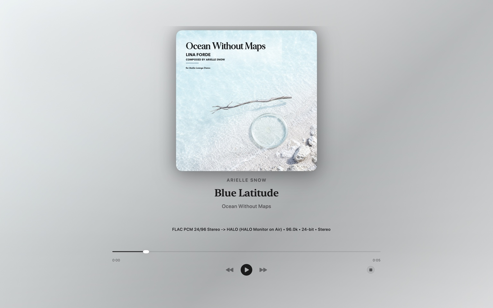
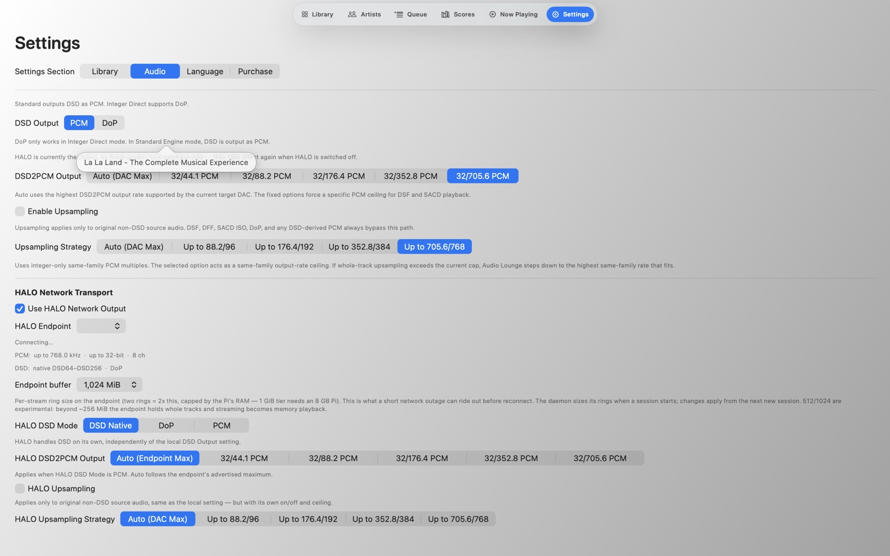
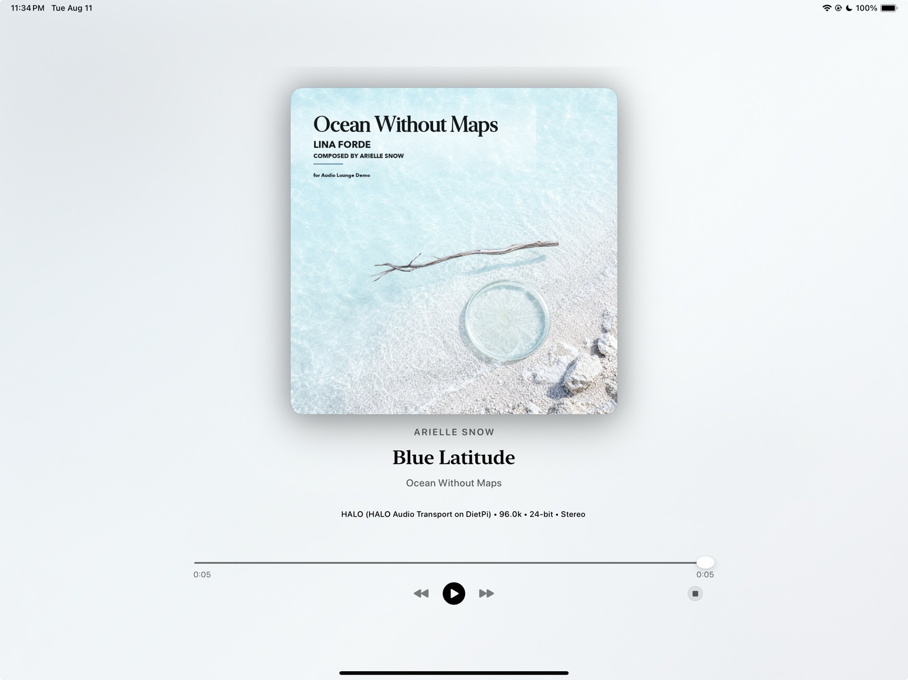

Audio Lounge Blog · August 12, 2026 · 12 min read
Why I Built HALO
Why Audio Lounge needed its own network audio path—and why HALO is deliberately smaller than a server, core, or second player.

HALO began with a constraint, not a protocol idea: Audio Lounge Air should be able to sit in the listener’s hands while the USB DAC stays where it makes sense—beside the Hi‑Fi system.
That sounds like a small problem until you try to preserve the rest of the product at the same time. I did not want the iPad to become only a remote. I did not want the Mac to become a mandatory server. I did not want a second library database, a second queue, or another playback application whose state had to remain synchronized with Audio Lounge.
I wanted one player with a longer audio path.
The endpoint should simply extend its audio path to the DAC. With compatible endpoint hardware and DACs, HALO supports Native DSD up to DSD512 over the network, preserving the DSD playback path without converting it to PCM — which is especially exciting for DSD enthusiasts.That became the core design rule for HALO.
I looked at the ideas that already existed.
Network audio is not a new category, and HALO was never based on the idea that existing systems had failed. The useful question was different: which architectural ideas actually matched Audio Lounge?
UPnP / DLNA
Broad interoperability is the strength. Servers, control points, and renderers can come from different vendors, and that flexibility is valuable. For Audio Lounge, though, the generic media architecture was wider than the problem. Audio Lounge already had a library, a queue, and a playback engine; I did not want reaching a DAC to require adopting another media model.
Roon / RAAT
Roon shows what a carefully integrated server-and-endpoint ecosystem can feel like at scale. That is a good answer when the server is meant to become the center of the system. Audio Lounge was heading in the other direction: the Mac or iPad running Audio Lounge should remain the thing the listener experiences as the player.
Diretta
Diretta is interesting because it treats the network transport itself as part of the audiophile system and keeps a clear host-to-target concept. HALO shares the attraction to a focused endpoint, but I wanted deployment to stay practical on ordinary 64-bit Linux hardware and to be inseparable from Audio Lounge’s own playback model.
HQPlayer NAA
NAA came closest conceptually: keep the important processing with the main application and let a lightweight network endpoint sit close to the DAC. That separation made sense. The remaining question was ownership of the path. Audio Lounge already knew its formats, optional upsampling, DoP preparation, queue state, and output decisions, so a dedicated endpoint could stay even narrower.
The comparison did not lead to “HALO should replace these systems.” It led to a much simpler conclusion: Audio Lounge needed a transport that was intentionally shaped around Audio Lounge.
HALO is the path. The HALO Endpoint is the box beside the DAC.
The naming matters because it reflects the architecture. HALO Network Audio is the end-to-end path between Audio Lounge and the USB DAC. The small Linux machine beside the DAC is the HALO Endpoint.
The endpoint is deliberately not a second player. It does not need to know what album is open, how the library is grouped, what the user searched for, or which track will play three songs from now. Those are Audio Lounge responsibilities.
Audio Lounge can decode the source, decide whether the path should remain native or use optional PCM upsampling, prepare DoP where appropriate, and expose those decisions in Transparent Audio Path. HALO extends the resulting stream to the endpoint. The endpoint’s job is to present that stream to the selected ALSA hardware device reliably.

Why keep the endpoint intentionally small?
Because extra intelligence creates extra state. If the endpoint owns the queue, Audio Lounge and the endpoint must agree about queue state. If the endpoint owns the library, there are suddenly two concepts of the library. If the endpoint becomes the player, Audio Lounge Air becomes a controller rather than a player.
Keeping the endpoint narrow also makes it easier to understand operationally. It can run as a service on a small 64-bit ARM64 or x86-64 Linux device. It can advertise itself on the local network, start automatically, and sit beside the DAC without needing its own display or daily interaction.
Installation should feel closer to an appliance than a Linux project.
The development repository can be as technical as it needs to be. The user-facing endpoint should not be. That is why the public installation path uses precompiled binaries rather than cloning source code and compiling on the Raspberry Pi or mini PC.
The installer identifies ARM64 or x86-64, downloads the matching HALO Endpoint binary, verifies the SHA-256 checksum, installs the runtime pieces needed for ALSA and local discovery, creates the system service, and starts the endpoint. The source repository can remain private while the endpoint remains straightforward to install.
The supported setup is intentionally conventional: DietPi, Raspberry Pi OS 64-bit, or Ubuntu; a local network connection; and a USB DAC visible as an ALSA hardware device. The endpoint can then run headless beside the audio system.
Why HALO matters more on iPad than on Mac.
On a Mac, HALO is useful even when direct USB playback is already available. It lets Audio Lounge target a DAC elsewhere on the network without making that DAC the Mac’s normal system output. System sounds, video calls, and everyday macOS audio can stay on the Studio Display, built-in speakers, or another device while Audio Lounge owns its own route.
On iPad, the change is more fundamental. Without a network output path, high-quality USB playback physically ties the tablet to the audio system. That is technically functional and experientially incomplete.
HALO removes that tether. SMB Direct removes the storage tether. Together, they let Audio Lounge Air behave like a real player rather than a portable front end that still has to be wired into the room.

The DAC can stay with the Hi‑Fi.
The iPad can stay with the listener.
Mac and iPad should still feel like the same Audio Lounge.
This was another reason not to build a server/core/remote architecture. If the Mac were the permanent “brain” and the iPad were only a controller, the two platforms would have different roles and different mental models.
I prefer the simpler idea: open Audio Lounge on the device you are using. Browse the same kind of organized local library. Make the same kinds of playback choices. Select a local USB DAC or a HALO Endpoint as the destination. The platform changes; the product does not.
What HALO is not trying to be.
HALO is not a claim that every network-audio system should work this way. A listener who wants a broad multi-room server ecosystem, deep third-party renderer compatibility, or a different DSP architecture may reasonably prefer a system designed around those priorities.
HALO exists because Audio Lounge had a specific gap: it needed the output path to become location-independent without giving up ownership of the rest of the playback experience.
That is a narrower ambition than “build a network audio platform.” I think the narrowness is what makes it fit.
The design test is whether HALO disappears.
If HALO requires the listener to think constantly about protocols, services, endpoint state, or which machine is really playing, then the architecture has failed the product.
The successful version is much less dramatic: Audio Lounge discovers the endpoint, the listener selects it like an output, the DAC plays, and the technology recedes again.
For a product whose brand is built around elegance, that is the outcome I care about most.